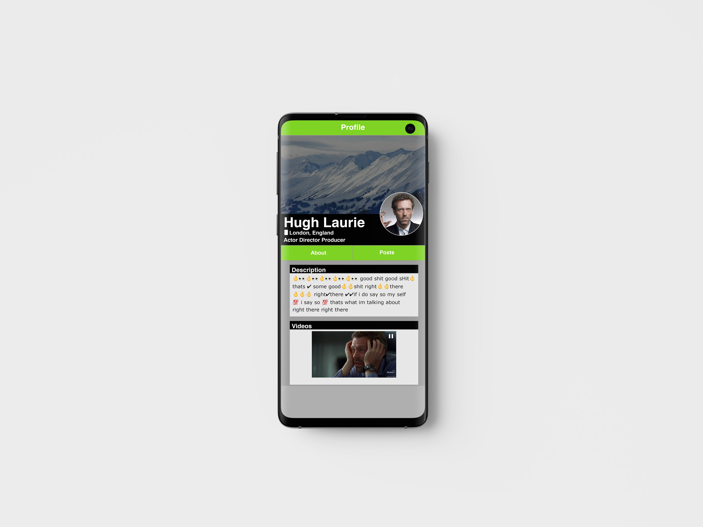
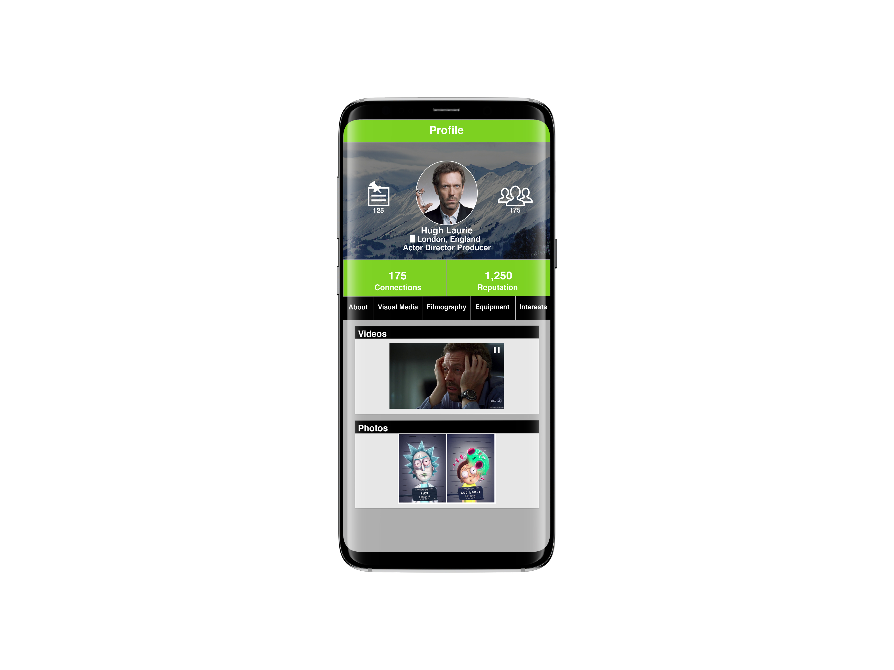
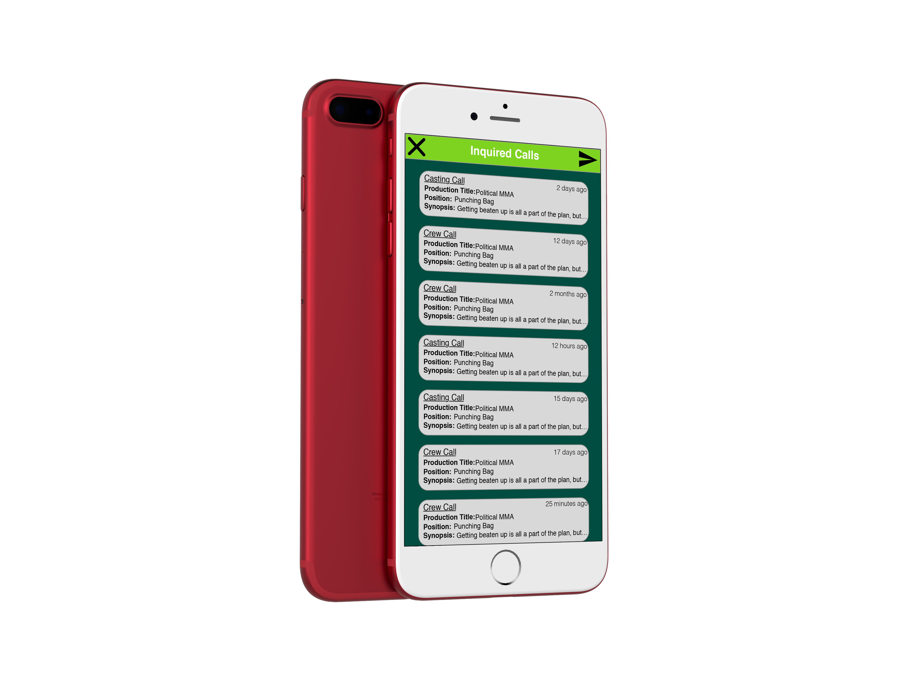

Greenflare - Indie Film App
I designed the User Interface and User Experience for Greenflare's Web, iOS & Android applications and developed html/css/javascript templates as well as angular logic for the mobile experience.
Greenflare is a web and mobile application that connects independent filmmakers and communities with opportunities and resources within their geographic reach. Greenflare exists to encourage awareness, accessibility, and collaboration among everyone who creates independent film by focusing on the connections within local communities


brief
- Designed the User Interface & User Experience for both web and mobile (iOS & Android) applications
- Developed html/css/javascript templates for the application based on my high-fidelity designs
- Testing the UI/UX for both the iOS & Android versions of our app
- Iterating over designs and features to be implemented in the app
Our UX Process
- Research
- Who are the users / customers?
- What is the product?
- What are the goals & deliverables?
- What features does the user need?
- What features drives user engagement?
- Document Findings
- Collaborate and build realtionships
- Users, Filmmakers, Stakeholders, Developers
- Create early low-fi designs and socialise with stakeholders & users
- Brainstorming and creating features & UI/UX processes for the needs of the user
- Iterate & test
- Testing with stakeholders to see which features & UI/UX experiences we should implement for the user
- Create high-fidelity designs & socialise with stakeholders & users
- Drive and create engaging UI/UX to increase user engagement and exceed user expectations
- Iterate & test
- Applying user testing and receiving feedback on what features of the application users need and would like to have
- Setting up automated diagnostics & reporting to handle errors and application bugs
- Implement designs building html/css/javascript templates
- Programming html/css/javascript templates from my high-fidelity UI/UX designs for the app
- Support implementation
- Keeping open lines of communication between stakeholders, developers & users
- Figuring out and capitalizing on which features of the application our users need and are most engaged with
How might we?
CREATE...A web & mobile (iOS & android) application
FOR...Indie Filmmakers, Producers & the Indie Film communitity
TO...Connect Independent Filmmakers and communities with opportunities & resources
SO THAT...Independent Filmmakers, Studios & Users will adopt the Greenflare platform
High level UX goals
- Keeping open lines of communication between stakeholders, developers & users
- Figuring out and capitalizing on which features of the application our users need and are most engaged with
Design iteration & delivery
Several examples of some of the design outputs I've iterated over based on evolving user engagement in an agile environment
  